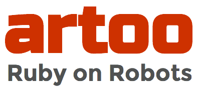

Gobot: Golang Powered Robotics
gobot.io
Good Afternoon
This is GopherCon
I am @deadprogram
Ringleader
@hybrid_group
The other guy is @adzankich
Serious Programming Guy
@hybrid_group
hybridgroup.com
kidsruby.com
Golang Powered Robotics
By its design, Go proposes an approach for the construction of system software on multicore machines
Golang FAQ
...the street finds its own uses for things
William Gibson
A Go Framework for Robotics & Physical Computing
Multiple Hardware Devices
Different Hardware Devices
At the Same Time!
The 10 Rules Of RobotOps
"What's 'RobotOps'?"
"DevOps For Robots"
cylonjs.com


artoo.io
gobot.io
Declarative Code Syntax (#1)
package main
import (
"github.com/hybridgroup/gobot"
"github.com/hybridgroup/gobot-digispark"
"github.com/hybridgroup/gobot-gpio"
)
func main() {
digispark := new(gobotDigispark.DigisparkAdaptor)
digispark.Name = "Digispark"
led := gobotGPIO.NewLed(digispark)
led.Name = "led"
led.Pin = "0"
work := func() {
gobot.Every("0.5s", func() {
led.Toggle()
})
}
robot := gobot.Robot{
Connections: []gobot.Connection{digispark},
Devices: []gobot.Device{led},
Work: work,
}
robot.Start()
}
Multiple Platforms/Devices (#2)
Arduino
Digispark
Admin Tools (#3)
Built-In API (#4)
Robeaux
robeaux.io
Command Line Interface (#5)
Code Generators (#6)
Tessel
Test-Driven Robotics (#7)
describe("robot", function () {
var robot = Cylon.findRobot("testor");
it("should have work", function () {
return robot.work.should.be.a('function');
});
it("should toggle the led after 1 second",
function (done) {
var led = robot.devices['led'];
var toggle = sinon.stub(led, 'toggle');
clock.tick((1).second());
toggle.should.have.been.called;
done();
});
});